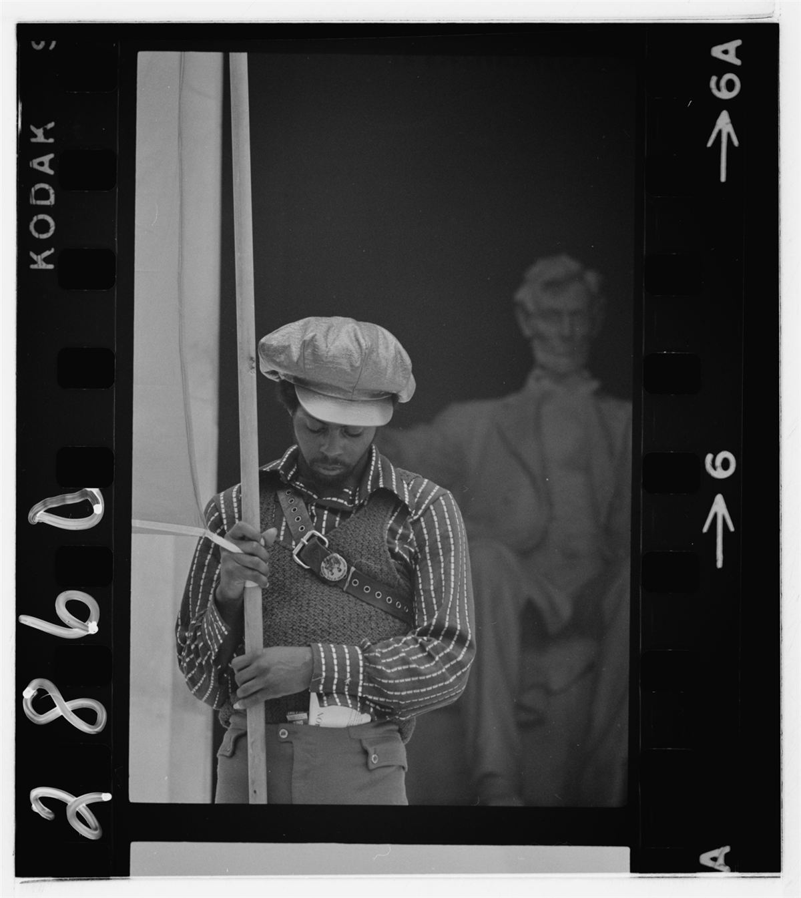

La bande à Mamie aime les Panthers, mais elle les aime les yeux ouverts. Leur histoire pose des questions qui nous concernent encore : peut-on se défendre sans devenir une armée ? Un parti très discipliné protège-t-il, ou expose-t-il ses militants ? Et que deviennent les révolutionnaires quand le parti s'effondre ?
L'autodéfense
Pour les Panthers, la non-violence de Martin Luther King avait ses limites face à une police qui tue. Ils revendiquent le droit de se défendre, y compris par les armes, comme Malcolm X avant eux. Mais la stratégie a un prix : les fusils attirent les jeunes et les caméras, et donnent au pouvoir le prétexte pour frapper. Les Panthers eux-mêmes ont fini par mettre l'accent sur les programmes sociaux plutôt que sur les armes.
Aujourd'hui, l'autodéfense prend surtout d'autres formes : filmer la police, accompagner les personnes ciblées, tenir une legal team, protéger un cortège (voir le Guide de manif).
Contre le fascisme, avec les autres
En juillet 1969, les Panthers organisent à Oakland une grande conférence pour un front uni contre le fascisme, avec des militants blancs, latinos et asiatiques. Pour eux, la police raciste et l'État répressif étaient déjà une forme de fascisme. La « coalition arc-en-ciel » de Fred Hampton à Chicago allait dans le même sens : unir les pauvres de toutes les couleurs contre le même système. Une idée que l'antifascisme d'aujourd'hui n'a pas fini d'explorer (voir la rubrique Antifascisme).

La critique libertaire
- Le parti d'avant-garde : le Black Panther Party se voulait l'avant-garde du peuple noir, avec un comité central, des grades, une discipline stricte. Quand la direction se trompait ou se déchirait, tout le parti suivait.
- Le culte du chef : autour de Huey Newton surtout, devenu une figure intouchable, dont les dérives des années 1970 (violences, abus de pouvoir) ont fait fuir de nombreux militants.
- Le sexisme : les femmes, très nombreuses, ont fait tourner les programmes, mais ont souvent dénoncé le machisme de dirigeants. Des militantes comme Elaine Brown ou Kathleen Cleaver l'ont raconté.
- La vulnérabilité : une organisation centralisée, avec des listes de membres et des chefs connus, est facile à infiltrer et à décapiter. COINTELPRO l'a prouvé.
L'anarchisme noir
Plusieurs anciens Panthers, passés par la prison, en ont tiré une conclusion libertaire : il fallait garder l'autonomie des communautés et l'entraide, mais jeter le parti et le chef.
- Lorenzo Kom'boa Ervin, ancien Panther, écrit en prison Anarchism and the Black Revolution (1979), l'un des textes fondateurs de l'anarchisme noir.
- Kuwasi Balagoon, membre des Panthers de New York puis de la Black Liberation Army, se déclare anarchiste en prison, où il meurt en 1986.
- Ashanti Alston, ancien Panther et prisonnier politique, continue de défendre un anarchisme noir qui part des besoins des quartiers.
À retenir
- Le plus durable, ce ne sont pas les fusils, mais les programmes d'entraide.
- La répression vise d'abord ce qui marche, et ce qui unit.
- Une organisation centralisée est plus facile à briser : une leçon reprise par les libertaires.
- Pour comparer : la grève générale de Mai 68, la même année, de l'autre côté de l'Atlantique.
Sources et pour aller plus loin
Lire
- Anarchism and the Black Revolution, Lorenzo Kom'boa Ervin, 1979.Le texte fondateur de l'anarchisme noir, par un ancien Panther. En anglais.
- A Taste of Power, Elaine Brown, Pantheon, 1992.Le pouvoir, le sexisme et les dérives du parti, racontés de l'intérieur. En anglais.
Sur le web
- Lorenzo Kom'boa ErvinDe Panther à anarchiste.
- Kuwasi BalagoonPanther, Black Liberation Army, anarchiste.
- Elaine BrownLa seule femme à avoir dirigé le parti.
Dossier rédigé par la bande à Mamie à partir de travaux d'historiennes et d'historiens et de textes des mouvements concernés. Libre de reproduction.